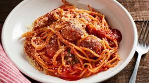

Spaghetti

This classic never disapoints.
Simple, easy, and always delicious, spaghetti is a recipe that all home cooks should know by heart
Ingredients
- Dry spaghetti noodles
- Jarred Pasta Sauce
- Garlic Cloves
- Olive Oil
Steps
- Mince the garlic and add it to a saucepan with the oil
- Once the garlic has turned golden brown, add in the pasta sauce
- Set the heat to low and simmer until the sauce has thickened
- Meanwhile, add the pasta to a large pot of boiling water
- Once both the sauce and pasta are finished, combine them and serve
Return to homepage